China’s “Sora-Like” Video Models: Where They Stand and How Large the Gap Really Is
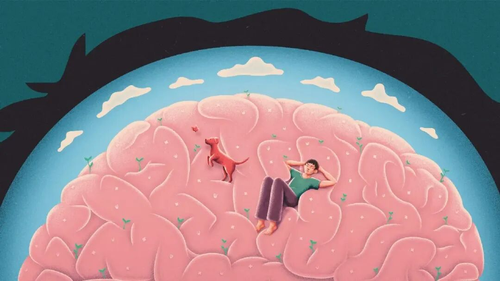
February 16, 2024.
On the very same day that Google released its next-generation multimodal foundation model, Gemini 1.5 Pro, OpenAI once again captured the world’s attention with its new text-to-video model, Sora.
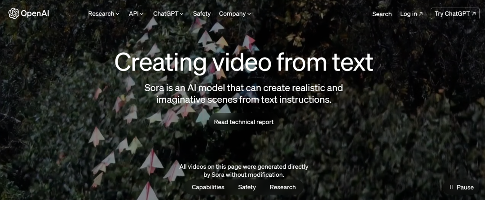
“Disruptive,” “explosive,” “game-changing,” “crazy”—adjectives like these surrounded Sora almost overnight. Unlike ChatGPT, whose uniqueness often became apparent only after a long conversation, Sora delivered its shock almost instantly, in a what-you-see-is-what-you-get form.
If we can still intuitively imagine how much new information a text-to-text model adds between an input and an output, then the transformation from text to video that Sora performs may be better described by a single word: creation.
At the same time, AI entrepreneurs and investors already trained by ChatGPT’s success immediately recognized the enormous business opportunities hidden behind those four letters meaning “sky.” Amid the excitement, many people in China naturally began asking: With Sora now here, what about Chinese AI companies? Do they already have Sora-like products? Do they have the necessary technical foundations? Can they quickly assemble teams and catch up in text-to-video generation?
So today, we are going to conduct an “industry-wide inventory” of China’s video-generation models: what they can do today, how far they are from Sora, and whether any of them show particularly promising strengths. We cover nine models from ByteDance, Tencent, Baidu, Alibaba, and two startups. The overall comparison is summarized below.
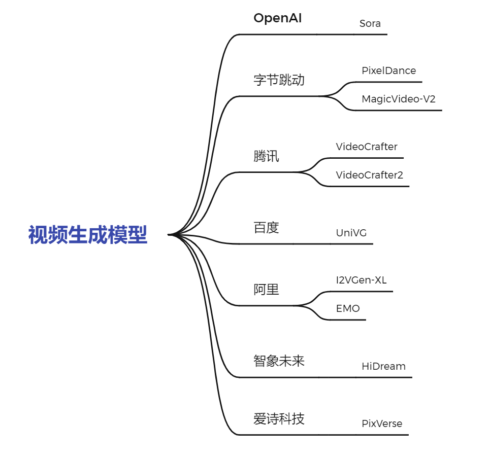
Before looking at the Chinese models, let us start with Sora itself.
OpenAI: Sora
In fact, much like large language models, text-to-video generation was not a field invented by OpenAI. It evolved naturally from advances in areas such as text-to-image generation, but with substantially greater technical difficulty and complexity. Before Sora, we had already covered a number of video-generation systems, including:
- Google releases a zero-shot video-generation model with impressive results
- ByteDance’s new text-to-video model produces smooth dancing foxes and beats Gen-2
- Shanghai AI Lab releases Vlogger, generating minute-long videos from a few sentences
- Pika 1.0 opens public testing
- An AI-generated TV drama where every character is a large model
- And many more.
Pika, Runway, Gen-2, and others had already established themselves in video generation. So why was Sora the one that truly broke into the mainstream?
To answer that, let us quickly review Sora’s technical report, titled Video Generation Models as World Simulators. Right from the beginning, OpenAI emphasizes not merely Sora’s video quality, but its potential as a “world simulator.”
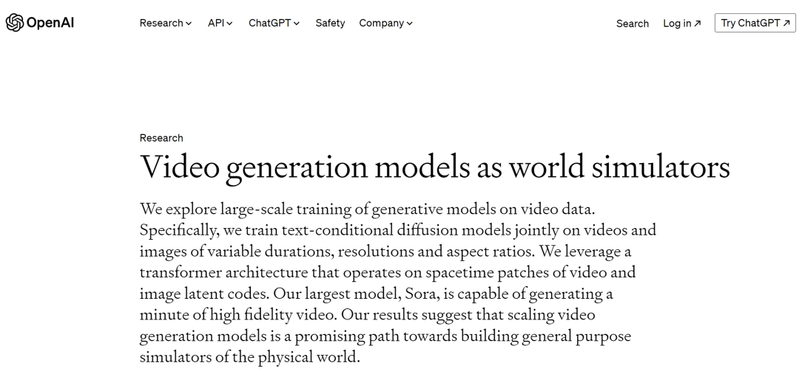
That distinction matters. Unlike earlier video-generation work, Sora’s ability to generate high-definition, polished video also appears to offer a technological route toward AGI through models that simulate the real world. Its videos seem to display a striking understanding of the abstract concept of the “physical world.” To quote NVIDIA researcher Jim Fan: “If you still think Sora is just a generative toy like DALL·E, think again. It is a data-driven physics engine.”
From an architectural perspective, many researchers still believe that the “world simulator” behavior shown by Sora is very much in the OpenAI tradition: an emergent capability produced by scaling. Even the most advanced simulation software has enormous difficulty modeling the physical world. In video generation, understanding the physical world requires properties such as 3D consistency, object permanence, and long-range coherence. How these capabilities emerge from the architecture described in Sora’s technical report—a VAE encoder, ViT-style processing, conditional diffusion, DiT modules, and a VAE decoder—remains something of a mystery.
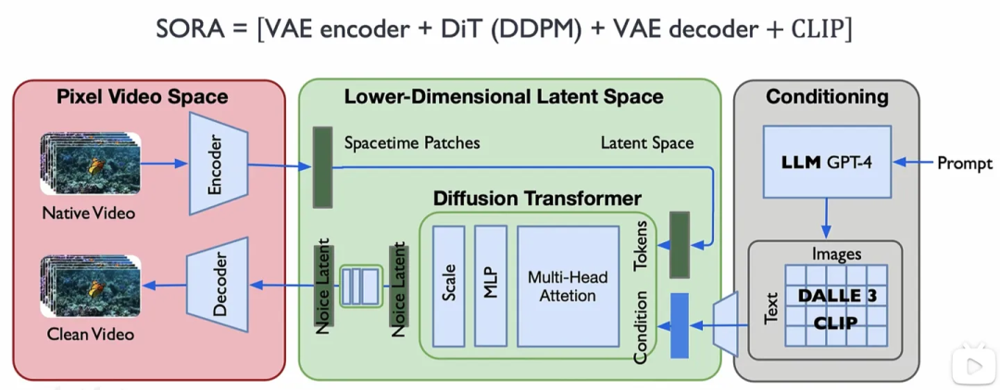
Beyond its science-fiction-sounding “world simulator” ambition, Sora’s most obvious and shocking feature as a text-to-video foundation model is its ability to generate coherent videos up to 60 seconds long directly from a text prompt. Sixty seconds may not sound long, but before Sora the average AI-generated clip was only around four seconds. For comparison, the average Douyin short video is only around 20–30 seconds even though users spend more than 2.5 hours per day on the platform. In a commercial film, 60 seconds can contain roughly 15 shots; in the hands of a good director, it can be enough to tell a complete story.
Beyond duration, which is easy to quantify, Sora also gives a powerful intuitive impression through its exceptional coherence.
For ordinary viewers rather than reviewers reading benchmark tables, a clear and coherent video creates the most immediate visual impact. Sora also pushes realism to a new level. In the example below, if CCTV had not explicitly marked the footage as model-generated, how many viewers would immediately notice that the eye was synthetic?
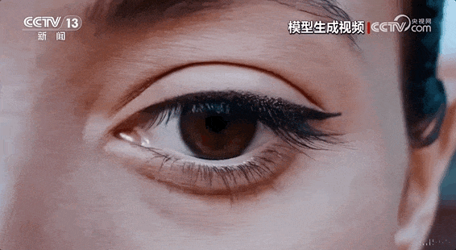
In addition to these obvious breakthroughs, Sora also brings stronger semantic understanding, support for different aspect ratios and resolutions, and impressive video extension capabilities. It is therefore not surprising that Sora immediately created a “ChatGPT moment” for video generation.
With Sora as our reference point, let us now step back and take a more critical look at the state of Chinese video-generation models released over the previous half year.
ByteDance: MagicVideo-V2 and PixelDance
Among China’s major technology companies, ByteDance—whose rise was built on short video—has made perhaps the broadest push into video generation. In fact, only about a month before Sora appeared, ByteDance had released a new text-to-video model called MagicVideo-V2. It integrates four components—text-to-image generation, image-to-video generation, video-to-video generation, and video-frame interpolation—into one framework, allowing it to generate high-definition, smooth, and coherent video.
In its paper, ByteDance states that the model outperforms mainstream systems such as Runway, Pika 1.0, Morph, Moon Valley, and Stable Video Diffusion in visual quality, smoothness, coherence, and semantic faithfulness.
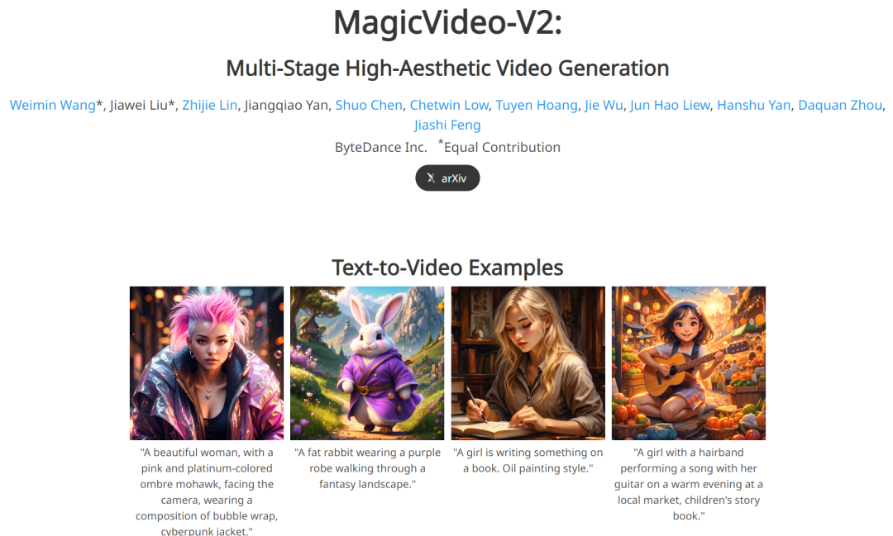
From the examples on the project site (https://magicvideov2.github.io), the videos are genuinely impressive in resolution, realism, and motion coherence. For example, when asked to generate a polar bear playing a guitar, MagicVideo-V2 produces a result with strong image quality, good semantic faithfulness, and smooth motion.
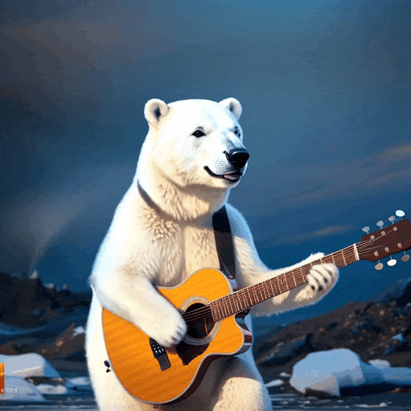
▲ A polar bear is playing guitar
If we instead ask for a more realistic rather than cartoon-like scene—for example, a young boy riding a bicycle along a park path—MagicVideo-V2 looks somewhat more stylized and artificial than Sora’s almost photorealistic output. Some local details are also still imperfect.
Still, the slightly cartoonish feel is not the decisive problem. Compared with Sora, what really puts MagicVideo-V2 at a disadvantage is video duration. As the examples show, its clips are still around three to four seconds long. We can see that a “picture” has been successfully animated, but the result is far from the cinematic impact of Sora.
In addition to MagicVideo-V2, ByteDance released PixelDance in November 2023, a tool that generates video from text plus a first-frame image and a last-frame image.
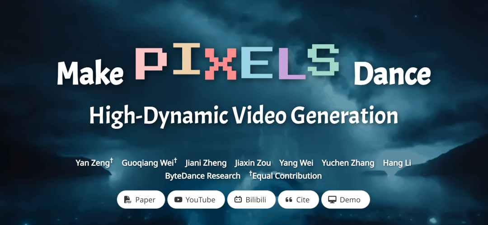
Unlike pure text-to-video generation, PixelDance takes guidance images plus a textual description as input. Although many outputs still resemble animated GIFs, their clarity and smoothness can be striking. One example shows a bronze sculpture of a couple kissing while rotating.
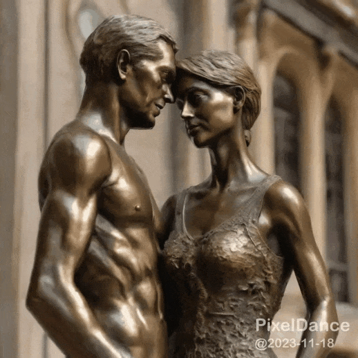
But the overall visual style can still feel synthetic, and human movement can look stiff. One example asks for “a girl slowly turning her head, smiling, with her hair moving.”
Interestingly, perhaps because it benefits from image guidance, PixelDance’s website (https://makepixelsdance.github.io) also demonstrated a three-minute short film—longer than Sora’s clips.
Yet the “film” still contains many problems: unnatural movements, stiff transitions, sudden character deformations, and more. It remains far from being something that could truly disrupt the short-video industry. In fact, when PixelDance appeared in November 2023, only three or four months before Sora, a common view in the field was that “generating videos with both high consistency and rich dynamics—making video content truly move—is the biggest challenge in video generation.” Comparing that view and those “older” models with Sora makes the shock produced by Sora easier to understand.
Beyond MagicVideo-V2 and PixelDance, ByteDance’s CapCut/Jianying has also announced that its Dreamina text-to-image tool will add text-to-video generation and is currently being tested internally. Sora’s momentum has not yet faded, so it will be interesting to see whether Dreamina can deliver something beyond MagicVideo-V2.
Tencent: VideoCrafter2
Interestingly, only one day after ByteDance released MagicVideo-V2, on January 17, China’s large technology companies seemed to enter a game of leapfrog: Tencent had VideoCrafter2, while Baidu followed with UniVG. Let us begin with Tencent’s VideoCrafter2.
As its name suggests, VideoCrafter2 is the successor to VideoCrafter, which was released around the same time as PixelDance. One example from the original VideoCrafter is an “astronaut riding a horse.”
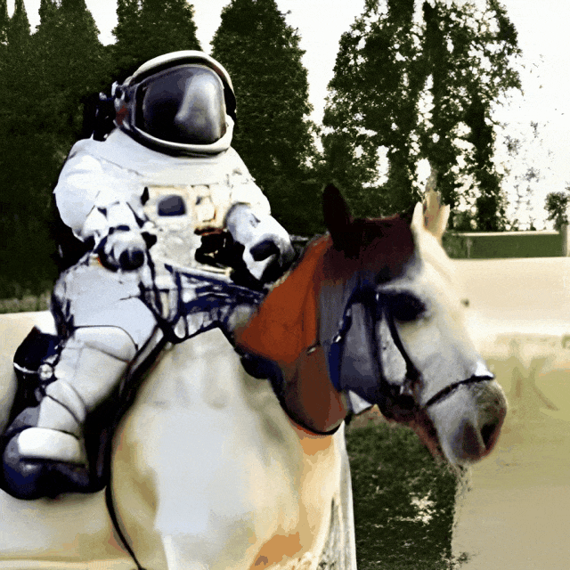
Its quality was broadly similar to other models from the same period. VideoCrafter’s more distinctive contribution was personalized generation and controllability: users could fine-tune the model on a small set of specific video clips or images in order to transfer styles and exert deeper control over the generated result.
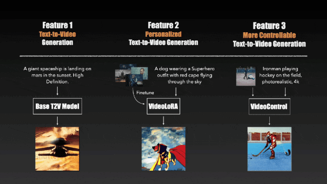
It is worth noting that VideoCrafter uses a U-Net architecture—the design that Sora’s Diffusion Transformer (DiT) effectively moved beyond—and VideoCrafter2 retains that choice. In fact, VideoCrafter2’s main contribution is focused on how to generate high-quality video using low-quality video data together with high-quality image data (https://github.com/AILab-CVC/VideoCrafter).
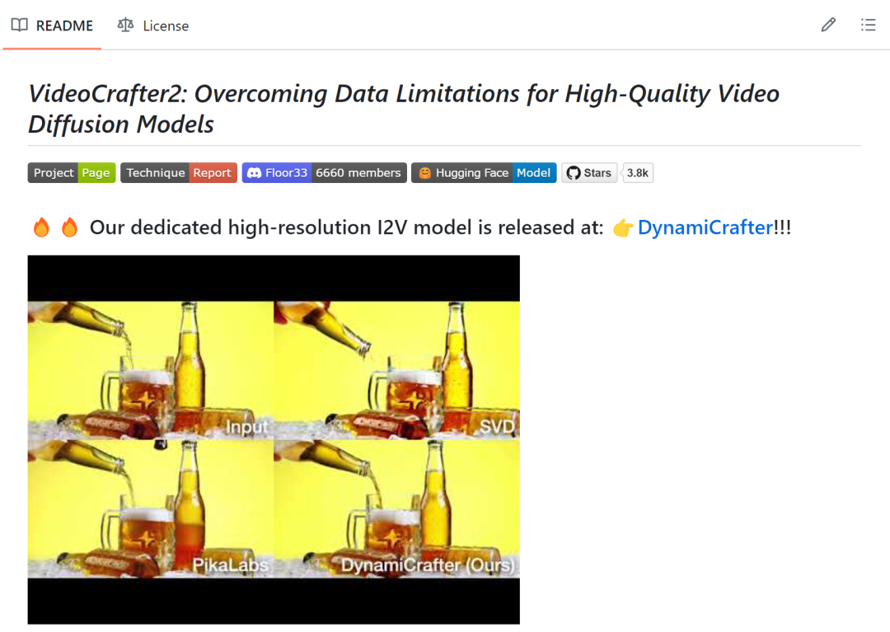
Compared with the original VideoCrafter, VideoCrafter2 makes major improvements in clarity and motion. One example shows “a child excitedly swinging on a slightly rusty swing.”
Another shows “a young woman wearing glasses and a pink headband jogging in a park.”
Overall, the videos are impressive in both sharpness and smoothness, and the method for producing high-quality video from lower-quality data is technically valuable. Unfortunately, after seeing Sora first, it is difficult not to feel that the two systems are competing in different dimensions when judged by duration, motion quality, character deformation, and other factors.
Baidu: UniVG
Next is Baidu’s UniVG (https://univg-baidu.github.io), released on the same day as VideoCrafter2. Whereas Tencent focused on converting lower-quality training data into higher-quality generation, Baidu positions UniVG around the idea of a “Unified Model”—a more flexible video generator that accepts arbitrary combinations of text and images as input.
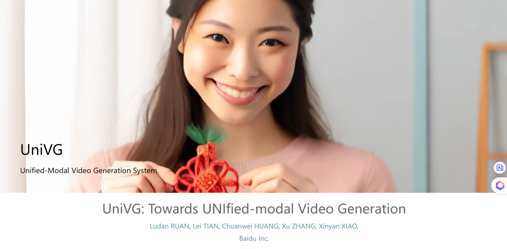
The generated results are surprisingly clear. One example is “a cat eating a carrot.”
Another shows “a little girl and a fish.”
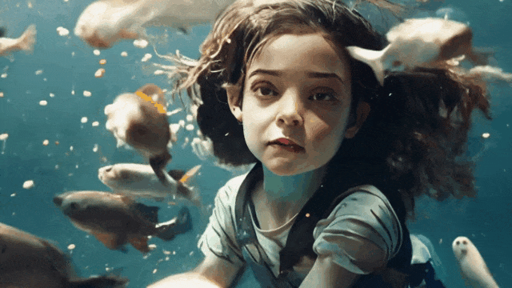
The clarity and realism are quite good overall, but the biggest problem may still be that the clips are simply too short. They often feel like several images stitched into motion rather than a unified story unfolding over time.
Alibaba: I2VGen-XL and EMO
Alibaba had already released its I2VGen-XL video-generation model on ModelScope about five months before Sora appeared (https://i2vgen-xl.github.io). Unlike text-to-video generation, I2VGen-XL focuses primarily on image-to-video. Like Tencent’s systems, it is based on latent diffusion models and uses a U-Net architecture. Alibaba also invested heavily in data, collecting roughly 35 million single-shot text-video pairs and six billion text-image pairs for training.
Judging by its outputs, I2VGen-XL genuinely deserves the label “high quality.” For example, given the following image of a cat:
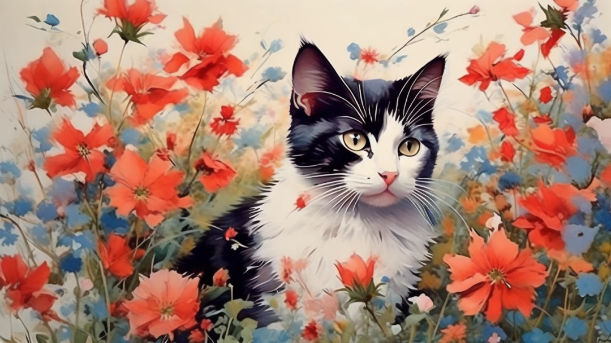
I2VGen-XL produces this video:
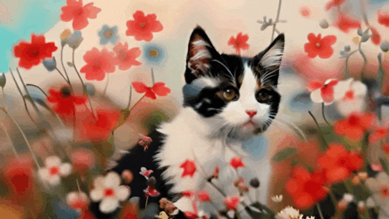
Given an image of three wolves:
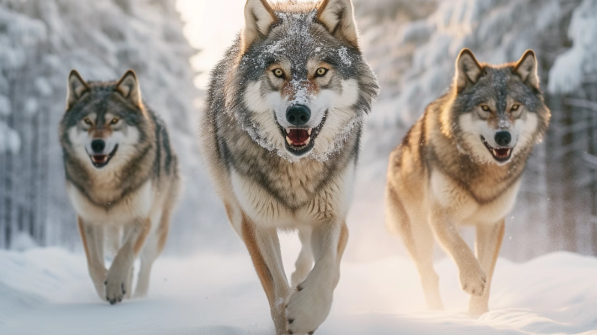
I2VGen-XL can also make them “run.”
When I2VGen-XL first appeared it was described by some as a milestone. Its motion diversity, faithfulness, and smoothness were among the best available at the time. But fundamentally it still mostly made images “move,” and it was far from producing the kind of “world simulator” effect seen in Sora.
More recently, Alibaba introduced EMO (Emote Portrait Alive), a framework that generates video from an image plus audio. Compared with I2VGen-XL, EMO is arguably more playful and immediately engaging.
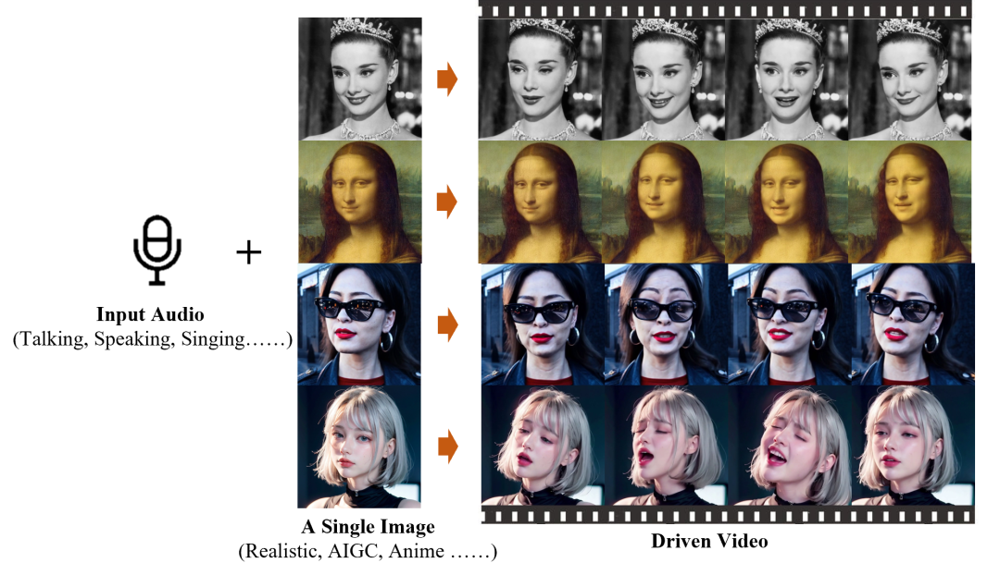
As shown above, given a portrait and arbitrary audio, EMO can make the Mona Lisa speak or make Audrey Hepburn sing.
There is even a small connection to Sora: take a synthetic character generated by Sora, add audio from an interview with OpenAI CTO Mira Murati, and the result can be remarkably convincing.
Beyond ordinary image-to-video generation, one of EMO’s most impressive capabilities is that it can generate a video matching the full duration of the input audio while maintaining the character’s identity and visual traits. The examples also show that EMO moves beyond the short “GIF-like” behavior of many earlier systems: facial expressions and head poses can remain vivid and stable over relatively long sequences. Some observers have even pointed out how accurately it reproduces details such as ears, eyebrows, and throat motion.
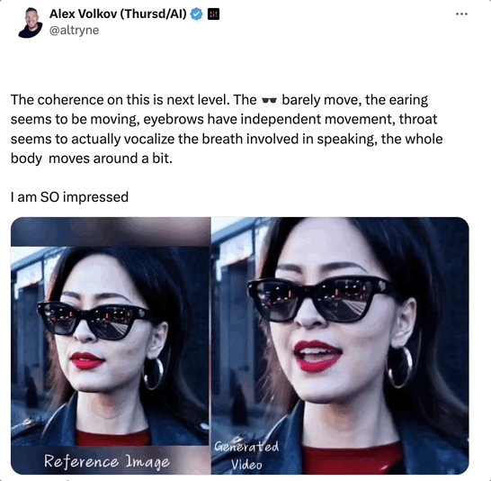
Startups: HiDream, PixVerse, and Others
Beyond the major technology companies, several Chinese startups are also working aggressively on video generation. Representative examples include HiDream from HiDream.ai and PixVerse from AIsphere. Both can be tried online:
HiDream: https://hidreamai.com/
PixVerse: https://app.pixverse.ai/
HiDream allows users to sign in directly with WeChat. After entering a text prompt, it can produce a corresponding video within a minute or two. We tested it with the same prompt: “a polar bear playing a guitar.”
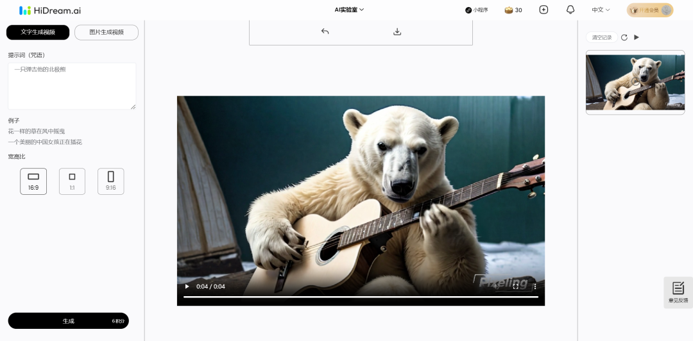
HiDream generates a clip of roughly four seconds, with fairly good clarity and smooth motion.
PixVerse can also generate a video within a few minutes after the user enters a prompt and selects a style. Its instruction-following ability, however, appears less reliable. With the same prompt—“a polar bear playing a guitar”—choosing a realistic style generated a woman playing guitar with no polar bear at all, while choosing an animation style generated two polar bears.
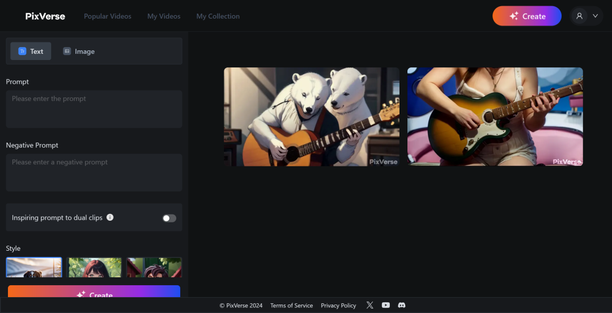
The generated videos also reveal obvious weaknesses in fine details.
After Sora
Taking a broader view of the comparison between Chinese video-generation models and Sora, many of these models were genuinely exciting when they first appeared. Their papers and technical reports reported strong benchmark results, and before Sora existed it was easy to praise each system for one innovation here and another highlight there.
But once we have seen Sora first and then look back at models that are only one, two, or three months older, the gap between them and the kind of “real transformation” OpenAI demonstrated becomes difficult to ignore. Historian Eric Hobsbawm described the Industrial Revolution by observing that once industrialization began, change itself became normal. Looking at the AI revolution now underway, however, Chinese models too often seem to produce incremental refinements within that “normal state of change,” repeatedly missing the milestone-level advances that redefine the field.
China has seen one company after another describe itself—or be described by others—as “China’s OpenAI,” alongside claims that China and the United States together dominate global AI. Yet much of the strategy still feels like “catch-up.” Just as Sora appeared on the same day Google released Gemini 1.5 Pro, if an industry settles into a pattern of celebrating incremental change until incrementalism becomes long-term mediocrity, we may repeatedly watch the same cycle: technologies like ChatGPT and Sora appear, we rush to catch up, external pressure follows, and the gap opens again.
We should recognize that while many of us thought the hardest problem in video generation was simply “making the content move,” Sora was targeting the deeper idea of a “world simulator.” The gap may therefore be about far more than four seconds versus sixty seconds.
Perhaps Chinese companies can stop merely following when innovation is no longer defined by a pre-drawn boundary around an application domain, but instead is guided by genuine curiosity about “intelligence” itself rather than only “applications of intelligence”—curiosity that pushes us to imagine the limits of intelligence and explore possibilities that have not yet been mapped. Only then might catching up turn into overtaking.